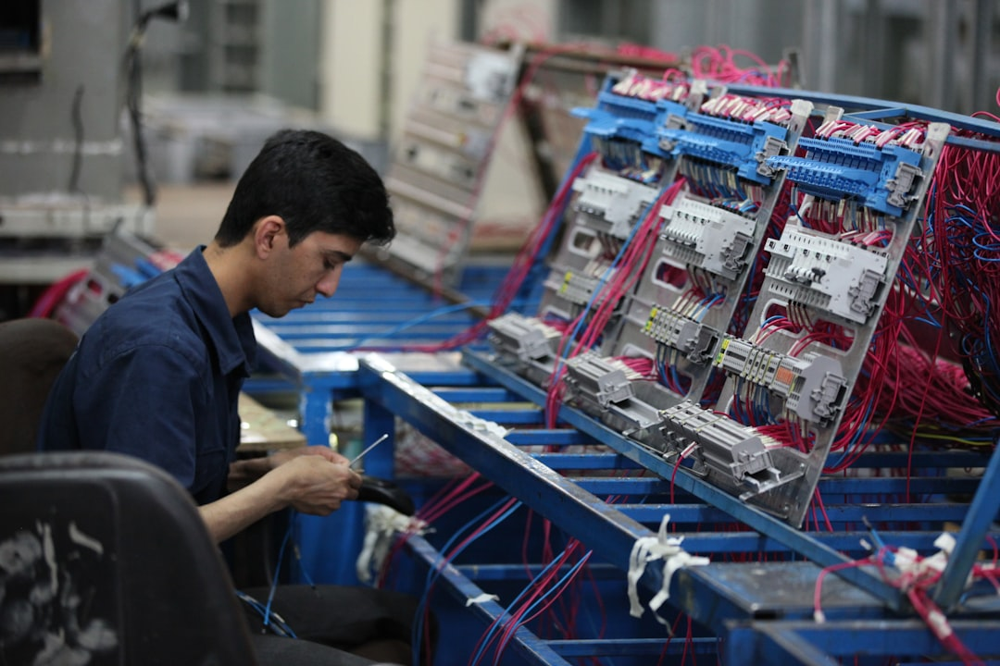

K-소부장 베트남 투자 50% 증가, 공급망 재편 실익 있나

2024~2025년 한국 중소·중견 소부장 기업의 베트남 직접투자는 전년 대비 약 50% 증가했다. 뉴스핌 보도 기준, 반도체 후공정·디스플레이·이차전지 소재 분야 기업 중심으로 호찌민·하노이 외곽 산업단지에 생산라인을 이전하거나 신설하는 사례가 급증하고 있다.
산업부가 2025년 소부장 투자지원 예산을 1,700억 원·6개 분야로 확대하면서, 지원 요건 중 '공급망 다변화 실적'이 신규 평가 항목으로 들어갔다. 이는 중국 단일 의존 구조를 벗어나 생산거점을 분산한 기업에 인센티브를 주는 방향으로, 베트남행을 사실상 정책이 가속하는 구조다.
베트남의 반도체 후공정 및 디스플레이 소재 관련 외국인투자 총액은 2023년 기준 약 28억 달러로, 삼성전자가 전체 대베트남 외국인투자의 10% 이상을 차지하는 최대 투자자다. 한국 소부장 기업은 삼성 생산라인과 물리적으로 근접한 박닌·하이즈엉 단지를 1순위 입지로 삼는다.
그러나 베트남은 갈륨·게르마늄 등 전략 소재의 자체 공급 역량이 없어 원료 조달 구조는 여전히 중국에 의존한다. '생산거점 다변화'와 '소재 공급망 다변화'는 별개 문제이며, 베트남 투자만으로 중국 소재 리스크가 해소되지 않는다는 점을 구분해야 한다.
한국 소부장 기업의 베트남행은 미국 관세 리스크 회피와 삼성 현지 라인 근접성 확보라는 두 가지 동기가 겹친다. 여기에 정부 1,700억 원 지원 요건이 '공급망 다변화 실적'을 평가하면서 정책이 밀어주는 구조가 형성됐다. 단순 원가 절감 이전이 아니라, 수출 규제와 관세 변수를 동시에 헤징하는 전략적 선택으로 봐야 한다.
다만 핵심 소재—갈륨, 이트륨, 희토류 형광체 등—의 조달 루트는 베트남 생산기지를 옮겨도 중국에서 출발한다는 구조가 바뀌지 않는다. '공장만 베트남, 소재는 중국'이 고착되면 진짜 공급망 리스크는 줄지 않는다. 투자자라면 기업의 베트남 투자 발표 시 '원료 조달 다변화 여부'를 별도로 확인해야 한다.
단기 수혜는 베트남 산업단지 입지 기업과 EPC 시공사다. 박닌·하이즈엉 단지 임차료는 한국 대비 30~40% 낮고, 베트남 정부의 첨단산업 외국인투자 법인세 감면(최대 10년, 기본세율 20%→우대 10%)은 실질 원가 경쟁력으로 연결된다.
중장기적으로는 베트남 현지 후공정 소재 납품 포트폴리오를 가진 기업이 수혜를 받는다. 삼성전자 베트남 스마트폰·TV 라인 납품 이력이 있는 한국 소재 기업은 신규 반도체 후공정 라인 진입에서 유리하다. 구체적으로는 반도체 봉지재·다이본딩재·세라믹 기판 소재 업체들이 해당된다.
국내에만 생산거점을 두고 중국산 원료를 직수입해 완제품을 납품하던 중소 소부장 기업은 이중 압박을 받는다. 중국 수출통제로 소재 원가가 오르는 동시에, 베트남 생산 경쟁사와 납품 단가 경쟁을 해야 하는 구조다.
또한 베트남 투자가 집중되는 박닌·하이즈엉 단지의 임차 경쟁이 심화되면서 2022년 대비 단지 내 표준 공장 임차료가 15~20% 상승했다. '빠른 베트남행'이 늦어지는 기업은 적지 적기 확보에서도 밀릴 수 있다.
구매담당자라면 협력사가 '베트남 투자 완료'를 납기 안정의 근거로 제시할 때, 핵심 소재의 조달 국가도 함께 물어야 한다. 갈륨·이트륨 기반 소재라면 생산기지가 어디든 원료는 중국발이며, 이 경우 수출통제 리스크는 동일하다.
투자자라면 정부 1,700억 원 소부장 지원의 '공급망 다변화 실적' 요건을 통과한 기업 리스트가 공개되는 시점(2025년 하반기 예정)에 주목하라. 지원 선정=베트남 생산거점+소재 이원화 동시 검증이라는 의미이므로, 단순 베트남 투자 발표보다 훨씬 강한 신호다.
실제 조달 현장에서는 — 베트남 현지 라인으로 소재를 공급하다 보면 '국내 통관→베트남 재반입' 구간에서 관세 분류 코드 문제로 납기가 2~3주 지연되는 일이 반복된다. 소재 공급사라면 베트남 HS코드 사전 확인과 현지 통관 대리인 계약을 생산라인 가동 전에 반드시 마쳐야 한다.
이 포스팅은 쿠팡 파트너스 활동의 일환으로 수수료를 제공받습니다.